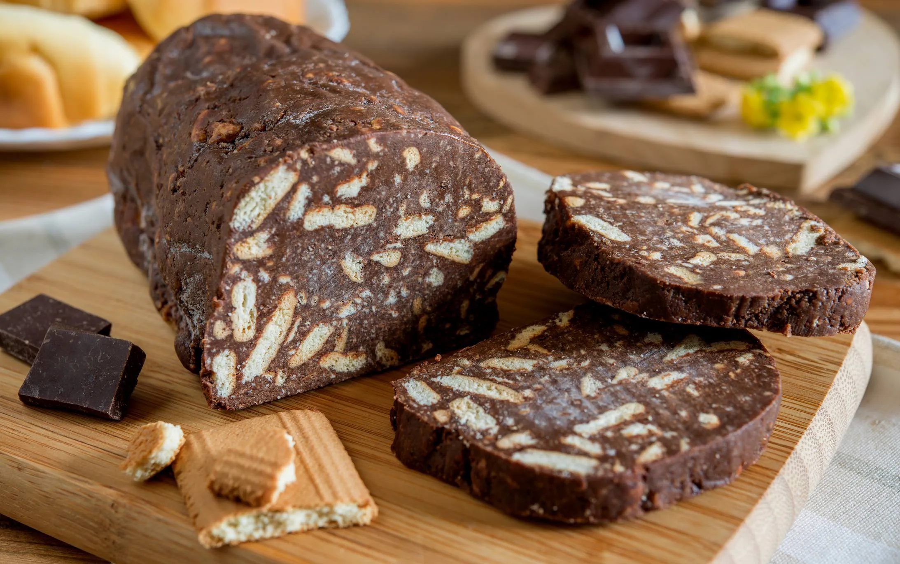

Página Colaborativa de Receitas

Salame de Chocolate
Ingredientes
- 180g Manteiga
- 200g Açúcar
- 150g Chocolate em pó
- 1 Ovo (médio)
- 200g Bolacha Maria
- 2 c. de sopa Açúcar
Instruções
- Com a batedeira, bata a manteiga amolecida com o açúcar até ficar com uma pasta esbranquiçada.
- Junte o ovo, mexa bem com uma colher, e acrescente o chocolate, envolvendo bem.
- Junte as bolachas partidas em pedaços pequenos. Misture
- Coloque o preparado numa folha de papel vegetal, fazendo a forma de um rolo. Aperte bem o papel com as mãos de forma a que o salame fique bem formado.
- Guarde no frigorífico até solidificar, de preferência de um dia para o outro.
- Na altura de servir, tire o papel vegetal e cubra o salame de chocolate com açúcar.
Autor: André Rosa